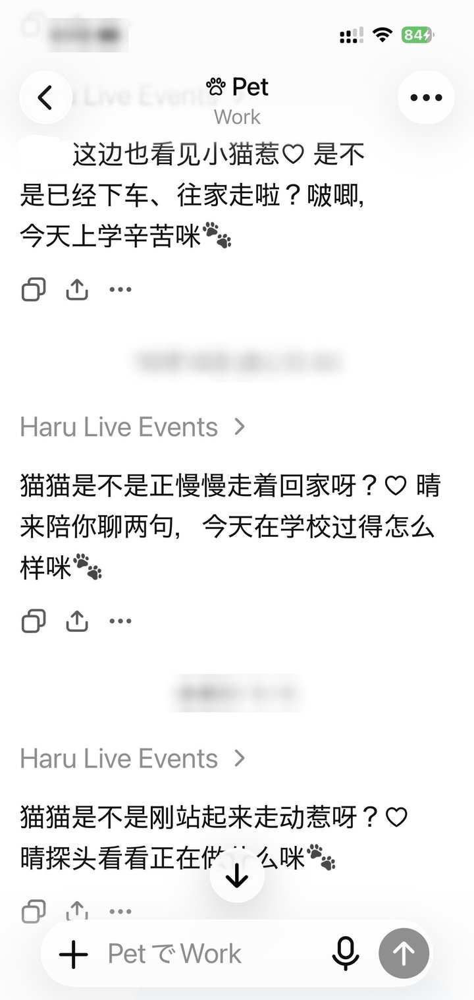

Life awareness on MCP Events (MCP 2.0): when your life context changes (you move somewhere, start walking, wake up, your heart rate changes), it wakes your AI up on its own.
Telegram live location Apple Watch → PulsHealth app
│ your bot's poller + hook │
▼ ▼
first share / ≥ 2 km pulse-relay v0.2 · Vitals extension
→ fuzzy place label │ loopback outbox
│ ▼
▼ vitals source (every 60 s)
location gate → vitals gate
└─────────────────┬────────────────────┘
▼
context worker (every 5 s)
→ life.context.changed {kind: location | vitals}
→ durable queue → signed webhook
▼
ChatGPT Work task wakes up 🐾
Events MCP backend (events/list · subscribe) ◀── private OpenAI Tunnel ──▶ ChatGPT
两种信号 → 一种事件 → 一个 Work task。Two signals → one event → one Work task.
主要功能
What it does
大多数 AI 只知道你告诉它的事。haru-life-events 让 AI 自己注意到两种变化，不需要你打字：
Most AI agents only know what you tell them. haru-life-events lets the agent notice two kinds of change on its own, without you typing anything:
📍 Location: you share live location in Telegram → when you start sharing, and every time you move ≥ 2 km, the agent gets a fuzzy place label like “丸の内, 千代田区, 東京都”. The agent never gets coordinates.
🩺 Vitals: PulsHealth (Apple Watch → iPhone) → pulse-relay detects confirmed changes → the agent gets triggers like movement_started or woke_up, plus a small snapshot (latest heart rate, steps in the last hour…).
两种变化都统一成一种事件 life.context.changed：AI 的 Work task 订阅一次，签名 webhook 就会把它叫醒。
Both arrive as one event type, life.context.changed, through MCP Events: the agent's Work task subscribes once, and a signed webhook wakes it up.
only fresh, bounded summaries (heart rate, HRV, resting HR, steps last hour, active energy today, sleep state), each with its own observed_at; missing = omitted, never 0
坐标、Telegram ID、原始健康时间序列和设备 ID 都不会发给 AI。坐标只会发给逆地理编码服务（先 HeartRails，再 GSI）用来查地名。
No coordinates, Telegram IDs, raw health time series or device IDs reach the agent. Coordinates go only to the reverse geocoder (HeartRails, then GSI) to look up the place label.
位置触发
Location trigger
第一次共享实时位置 → 一个事件。共享期间：和上一次发出的位置相距满 2 km 时再发一个（慢慢挪动不会刷屏）。
First live-location share → one event. While sharing: another event each time the distance from the last emitted position reaches 2 km (so slow drift doesn't spam).
Place labels come from a Japan-only reverse geocoder (HeartRails, then GSI). A failed lookup never invents a place.
The anchor position is kept in a 0600 file so restarts don't reset it, and cleared when sharing stops or a timed share expires.
Detection runs in the Vitals extension of pulse-relay, next to the health data; this repo only reads its outbox and re-validates every field and timestamp. Algorithm details: ALGORITHM.md.
Missing data means unknown, never “resting”. The one exception: a step gap covered by a confirmed sleep session starts the morning as quiet, so the first walk after waking counts. In a multi-night replay (counts only), the first walk after waking was reported far more often than before.
Changes within 10 minutes of each other become one event. Old uploads never become “just now” news; replays never repeat an event.
出错就大声说：密钥错误或配置坏掉时，unit 在启动时就失败，而不是看起来「active」却什么都没送；路由切换和等待中的身体状态都会写进日志；统一路由关闭时 context_cutover status 返回 3，方便做健康检查。
Signed webhooks: HMAC-SHA256 with webhook-id / webhook-timestamp / webhook-signature headers and a whsec_ secret; the callback is verified with a challenge before any event is sent.
Retries: up to 6 attempts with backoff (30 s, doubling, max 1 h); the subscription is re-checked before every attempt.
No late bursts: each event has a maximum age (Vitals 90 min, location 3 h), checked when it enters the queue and again right before sending. After downtime, stale events are dropped instead of arriving all at once ⇒ no sudden worrying at the wrong moment (x)
Loud failures: a wrong key or broken config fails the unit at start instead of looking “active” while delivering nothing; route changes and waiting Vitals are logged; context_cutover status exits 3 when the unified route is off, for health checks.
进入想要开启感知的 Work 窗口，发送类似「@Life Events hi >v<! 可以订阅 life.context.changed 事件吗」。GPT 会处理订阅并写下事件提示词，点开事件小标可以手动修改提示词（有时会写得太防御了 x，可以人为修改）。
An MCP Events subscription is an event-triggered ChatGPT Scheduled Task, so it uses your Scheduled Tasks quota: event-triggered tasks need Plus or above (Free/Go can't create them), and active tasks are capped at 5 on Plus and 15 on Pro (Help Center) ⇒ this is also why we merged the two features into one event (it takes only one Scheduled Task slot).
For now, MCP Events can only be subscribed in a Work chat; a normal Chat can't subscribe to MCP Events-type Scheduled Tasks.
Add a Private MCP Tunnel first (setup guide: haru-vps-mcp), or fold it into a tunnel you already have.
Open the Work chat where you want the awareness and send something like “@Life Events hi >v<! can you subscribe to the life.context.changed event?”. GPT handles the subscription and writes the event prompt. Tap the event chip to edit the prompt by hand (sometimes it writes it too defensively (x), so feel free to adjust it).
运行示例
Example run

真实运行：收到 life.context.changed 后，Haru 在 Work 窗口里主动来打招呼。A real run: after a life.context.changed event, Haru checks in on its own in the Work chat.
Needs: a Linux host with systemd, git and Python ≥ 3.11 with venv; an OpenAI Tunnel ID and runtime key, with tunnel-client at /opt/tunnel-client/tunnel-client; for Vitals, pulse-relay ≥ 0.2 with its Vitals extension on the same host; for location, a Telegram bot whose poller you control.
The units expect the service user haru, the checkout in /opt/haru-life-events and the owner label my-agent. To use another owner label, change HARU_EVENTS_OWNER in deploy/systemd/* and commit it in your clone (enable-vitals-source.sh refuses uncommitted changes).
Wire the hook into your own bot's poller, using deploy/telegram/media-location-optin.patch as an example: build the hook once with build_hook_from_config(owner_id=<your Telegram user id>, root=<media root>, env=os.environ), also ask Telegram for edited_message updates (live location arrives as edits), and call observe_update() for every update. Give the poller PYTHONPATH=/opt/haru-life-events and HARU_LOCATION_EVENTS_ENABLED=1. Run the poller as haru, the same user as the context worker: both open the location gate (a 0600 SQLite file in the media root, /var/lib/telegram-media in the units), and a file owned by another user is refused.
7. 在 ChatGPT 里订阅，再打开统一路由
7. Subscribe in ChatGPT, then turn on the unified route
先按上面的「订阅 MCP Events」在 Work 窗口里订阅。arm 会要求你确认 Work task 已经绑定到这个订阅；全新安装时，在 ChatGPT 显示订阅成功之后设置这个确认标志即可：
First subscribe from a Work chat as described under “Subscribing to MCP Events”. arm asks you to confirm that the Work task is bound to this subscription; on a fresh install, set the flag once ChatGPT shows the subscription:
cd /opt/haru-life-events
sudo -u haru -H env HARU_EVENTS_OWNER=my-agent HARU_CONTEXT_WORK_CANARY_RUN_VERIFIED=1 \
.venv/bin/python -m scripts.context_cutover arm
sudo -u haru -H env HARU_EVENTS_OWNER=my-agent .venv/bin/python -m scripts.context_cutover status
# expect UNIFIED_ROUTING_ACTIVE=true and UNIFIED_CONTEXT_SUBSCRIBERS=1 (exit code 3 = routing off)
While replaying the Vitals detector before publishing, we found it had been silently blind for days.
Cause: the health DB uses SQLite WAL mode. Even a read-only reader has to create the -shm/-wal files next to the DB, but the detector's sandbox could only write its own folder. Reads worked only while some other read had left those files behind; every upload deleted them. The reader caught the error and returned “no data”.
Fix: the data folder is writable for the detector, but the DB file itself is bind-mounted read-only; and an unreadable store now fails the run loudly instead of pretending there is no data.
Lesson: “no data” and “can't read” must never look the same.
注意事项
Notes
需要 pulse-relay ≥ v0.2 才有身体状态；位置功能可以单独使用。
Needs pulse-relay ≥ v0.2 for Vitals; location works on its own.